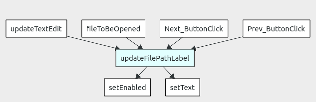

This is a tool to index, then query or search C, C++, Java, Python, Ruby and Go source code.
It builds upon the databases of cscope and Exuberant ctags.
The databases of cscope and ctags would be processed by the cqmakedb tool to generate the CodeQuery database file.
The CodeQuery database file can be viewed and queried using the codequery GUI tool.

Latest version = 0.16.0
Windows and Linux binaries available here for download: CodeQuery@sourceforge downloads
To build on Linux, please read the INSTALL-LINUX file. The latest git version (HEAD on master branch) can be used.
On Mac, the software can be installed through Brew using brew install codequery.
Please read NEWS to find out more.
How is it different from cscope and ctags? What are the advantages?
Both cscope and ctags can do symbol lookup and identify functions, macros, classes and structs.
cscope is very C-centric, but is fuzzy enough to cover C++ and Java, but not very well for e.g. it doesn't understand destructors and class member instantiations. It can't provide relationships of class inheritance and membership. cscope can do "functions that call this function" and "functions called by this function". This is a very powerful feature that makes cscope stand out among comparable tools.
ctags does many languages well and understands destructors, member instantiations, and the relationships of class membership and inheritance. From ctags, we can find out "members and methods of this class", "class which owns this member or method", "parent of this class", "child of this class" etc. However, it doesn't do "functions that call this function" or "functions called by this function".
So both these tools have their pros and cons, but complement each other.
CodeQuery is a project that attempts to combine the features available from both cscope and ctags, provide faster database access compared to cscope (because it uses sqlite) and provides a nice GUI tool as well. Due to this faster database access, fast auto-completion of search terms and multiple complex queries to perform visualization is possible.
In addition, pycscope is used to add support for Python, in place of cscope.
In addition, starscope is used to add support for Ruby and Go, in place of cscope.
What features does CodeQuery have?
- Combines the best of both cscope and ctags
- Faster due to the use of sqlite for the CodeQuery database
- Cross-platform GUI tool
- Fast auto-completion of search term
- Case-insensitive, partial keyword search - wildcard search supported * and ?
- Exact match search
- Filter search results by file path
- File viewer with syntax highlighting
- Ability to open viewed file in an external editor or IDE
- Visualization of function call graph and class inheritance based on search term
- Visualization graphs can be saved to PNG or Graphviz DOT files
What types of query can I make?
- Symbol
- Function or macro definition
- Class or struct
- Functions calling this function
- Functions called by this function
- Calls of this function or macro
- Class which owns this member or method
- Members and methods of this class
- Parent of this class (inheritance)
- Children of this class (inheritance)
- Files including this file
- Full path for file
- Functions and macros inside this file
- Grep
What does it look like?

How does the visualization look like?
Here's a function call graph based on the search term of "updateFilePathLabel". A -> B means A calls B:

What does it cost? How is it licensed?
It's freeware and free open source software.
This software is licensed under the GNU GPL v3. See LICENSE.md or LICENSE.txt.
Files under the querylib directory are licensed under the MIT license. See QueryLib README. This is a library to query CodeQuery database files. This library is MIT-licensed, so that it may be used to create plugins for editors, IDEs and other software without license restrictions. It's only dependency is on sqlite3.
Can I use it in a commercial environment without purchasing, for an unlimited time?
Yes. However, donations are welcomed.
Which platforms are supported?
It has been tested on Windows 7 64-bit, Windows XP 32-bit, Mac OS X, Ubuntu and Fedora Linux 64-bit and, Ubuntu and Fedora Linux 32-bit.
Contributions are welcomed to attempt ports to other operating systems.
Is the software available in other languages?
Yes. This applies only to the GUI tool.
Contributions are welcomed to update or provide new translations.
How to install it?
On Windows, EXE setup packages will be provided here: CodeQuery@sourceforge downloads. The EXE setup package shall also contain cscope.exe, ctags.exe and the required DLLs. So, everything you need is in one package. However, pycscope (optional - only for Python) and starscope (optional - only for Ruby and Go) are not bundled together with this setup package and need to be installed separately.
On Linux, tar.gz, RPM and Debian package installations will be provided here: CodeQuery@sourceforge downloads.
On Mac, the software can be installed through Brew using brew install codequery.
To build on Linux and Mac, please read the INSTALL-LINUX file.
Version 15.8a of cscope or higher, works best with CodeQuery.
How do I use it?
On Windows: HOWTO-WINDOWS. This file is included in the EXE setup package.
On Linux and Mac: HOWTO-LINUX
Please read the HOWTO file provided for each platform. The workflow looks like this:

How do I generate whole-program call graphs or UML class diagrams?
CodeQuery cannot do this at the moment.
To generate whole-program call graphs, please use GNU cflow or CodeViz for C and C++. For Java, there is Javashot.
To generate whole-program UML class diagrams for various object-oriented languages, please use tags2uml.
Are there any known limitations?
For C and C++, inline assembly code is not supported by all the tools. This mainly affects embedded software, OS and driver code.
Please exclude files with inline assembly code from the list of files (cscope.files) to be scanned.
How do I contact the authors for support, issues, bug reports, fix patches, feature requests etc.?
Please see the email address below, and also the Issues tab in GitHub.
Email address:

Website: CodeQuery website
How can I contribute?
- Report bugs
- Provide feedback, new ideas, suggestions etc. What would you like to see?
- Tell your friends, propose it on StackOverflow, write about it, tweet it
- Fix bugs (see Issues tab)
- Update translations (Deutsch, Francais, Japanese etc.)
- Port to other platforms
- Write plugins for Vim, emacs, eclipse, Notepad++ etc.
- Write a web-based interface to CodeQuery's database
- Add support for other languages e.g. Javascript
List of Contributors
ruben2020
naseer
bruno-
(More welcomed)
Credits
We thank the people behind the following projects:
cscope - our database is derived from this
Exuberant ctags- our database is derived from this
pycscope - our database (for Python) is derived from this
starscope - our database (for Ruby and Go) is derived from this
sqlite3 - our database is using this format
CMake - cross-platform build toolchain for CodeQuery
Qt open source - GUI toolkit used to build CodeQuery
optlist - cqmakedb uses this to parse command line options
showgraph - visualization done using this library
scintilla - our code editing widget (in the form of QScintilla)
Axialis - free images for CodeQuery and this website
brew - binaries for Mac here